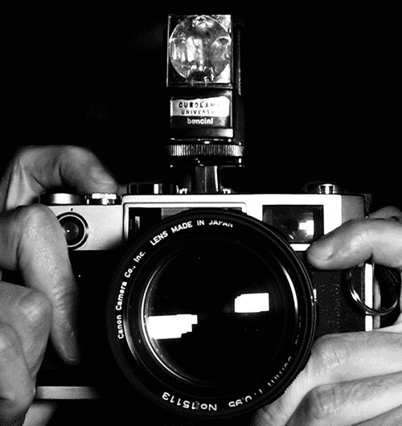
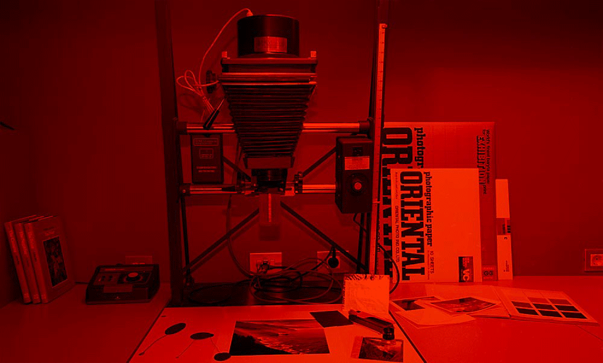

Foto Analoga

La fotografía analógica, de rollo o de carrete, también conocida como fotografía tradicional, o química,
es el retrónimo con el que se describe al proceso fotográfico tradicional, que utiliza técnicas no digitales
para producir imágenes, en comparación con la fotografía digital. Adicionalmente, este término sirve también
para separar la fotografía que utiliza rollos de película, sustancias químicas y cuartos oscuros de fotografía
mediante técnicas correspondientes al siglo XIX y primera mitad del XX, que se puede identificar como fotografía alternativa.Se basa habitualmente
en un proceso físicoquímico que involucra el uso de un material fotosensible activo (aplicado sobre placas de
vidrio o sobre una película flexible de material traslúcido, actualmente plástico) y su estabilización (revelado),
para la obtención y el procesado de las imágenes.
¿Como se toma una fotografia?

Para la obtención de imágenes fotográficas se emplea un soporte conocido como película fotográfica,A una
película dada, de una determinada sensibilidad (100, 200, 400 ISO), le corresponde una cierta cantidad de
luz para conseguir la exposición correcta.
Para obtener la exposicion correcta, las cámaras de fotos constan de diafragma y obturador. Por hacer una analogía entre el ojo y una cámara de fotos:
Diafragma: Es el iris del ojo. Abriéndose más o menos, conseguimos que entre una determinada cantidad de luz.
Obturador: Es el párpado del ojo. Teniéndolo más o menos tiempo abierto, obtenemos una mayor o menor incidencia de la luz en la película.
Objetivo: Es el cristalino. Se encarga de enfocar la vista, de forma que los objetos salgan nítidos en la película
Película: Es la retina. Donde se forman las imágenes que quedan en forma latente hasta que se revela la película.
¿Como se obtiene la fotografia que plasme en el rollo?

El proceso de revelado consta de dos pasos básicos: revelado y fijado, los cuales se dividen a su vez en pasos intermedios según el tipo
de película a tratar. La imagen así obtenida tiene sus valores de luz invertidos respecto a la captura original,
por lo cual se conoce a la película tratada como negativo.
Una vez seca, de esta película o «negativo» se pueden hacer copias de la imagen sobre papel o bien sobre otra
película, en cuyo caso obtendremos una diapositiva o positivo traslúcido, que nos permitirá observar la fotografía
por proyección o transparencia. Las imágenes obtenidas, al invertir nuevamente los valores de luz, por ampliación o contacto,
nos dan como resultado un «positivo». A este proceso se le llama positivado.